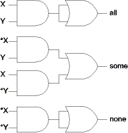
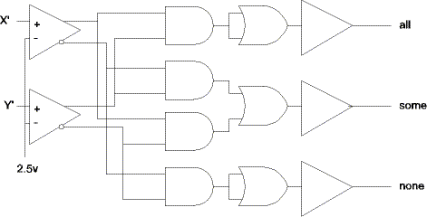
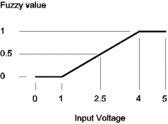
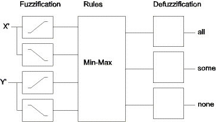
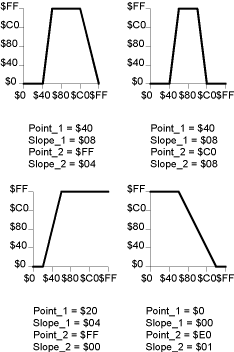

| Previous Section | Next Section | Index | Questions | Search the Text |
Traditionally controllers have been designed by modeling the physical system with derived equations, then calculating the control functions by analyzing the system equations. This is a reasonable task for simple systems, but becomes unbearably difficult for complex systems. Fuzzy Logic is an approach to controller design where the control functions bear a strong resemblance to much more easily defined Boolean Logic. Developing a Fuzzy Logic description of a controller is beyond the scope of this text, and is in fact most suitable for a complete Mechanical Engineering course. We will instead take an Electrical Engineering approach and see how Fuzzy Logic relates to the familiar Boolean Logic.
We know that we can build any network of Boolean Logic where there are at most two cascaded logic gates between the inputs and the outputs. Such a network is shown below. This network implements three functions of two inputs. The first function, output all, is true if the inputs are true. The second function, some, is true if some, but not all, of the inputs are true. The third function none is true if none of the inputs are true. Note that two off the OR gates aren't really necessary, but are shown so that every function is designed by an AND gate followed by an OR gate.

Since the inputs come from the physical world, and the outputs go to the physical world, we need to convert values. Lets say that our inputs are voltages X' and Y'. We will use a comparator on the input so that voltages greater than 2.5 will be true values and voltages less than 2.5 will be false values. On our outputs, true values will become 5 volts and false values will become 0 volts. Our final circuit will be something like this:

With Fuzzy Logic we no longer use absolute True and False values, but allow a continuum of values from totally false (which we will represent with the value 0) to totally true (which we will represent with the value 1). Our X' and Y' inputs no longer have to map into two input levels, and our outputs can have multiple levels as well. The comparators are replaced with a process called fuzzification which converts the input levels into fuzzy levels. The function that determines the fuzzy level is called a membership function. The membership function we will use is piecewise linear, although other functions are possible. We could decide that voltages less than 1 are totally false and those greater than 4 are totally true and get the following function mapping:

An input value of 1 volt would be a fuzzy value of 0, while an input value of 2.5 volts would be a fuzzy value of 0.5. We would need fuzzification functions for the complements of the inputs as well. In this case voltages less than 1 are totally true, those greater than 4 are totally false.
The Boolean logic gates become rules in Fuzzy Logic, but the operation is similar. Consider that the output of an AND gate is false if any input is false. That means the output of an AND gate is the minimum of the inputs. The output of an OR gate is the maximum of its inputs. So the AND/OR logic network becomes a minimum function followed by a maximum function. This is called MIN-MAX rule evaluation, and is the simplest form of Fuzzy logic rule evaluation. Much like we can assign different weights to our input values by using different fuzzification functions, it is also possible to assign weights to the outputs of the minimization functions so that some "AND" terms have more control of the output values than others. Our output level converters are replaced with a process called defuzzification which converts the fuzzy results into output values. A generalized system allows the defuzzification function to be a weighed average of any or all of the "OR" terms, although this possibility is not shown in this example.

Assuming the defuzzification function is unity, we would observe the following. If X' = Y' = 1, then fuzzy X=0, Y=0, *X=1, *Y=1, and we would get:
all = max(min(0,0),0) = 0
some = max(min(1,0),min(0,1)) = 0
none = max(min(1,1),0) = 1
This is what we would expect from the Boolean logic. Likewise, we would get similar results for X'=Y'=4 and X'=4, Y'=1 and X'=1, Y'=4. However consider what would happen if X'= 2.5 and Y'=1. Now fuzzy X=0.5, *X=0.5, Y=0, *Y=1, and:
all = max(min(0.5,0),0) = 0;
some = max(min(0.5,0),min(0.5,1) = 0.5;
none = max(min(0.5,1),0) = 0.5;
Our result is 50% of some and 50% of none. Indeed it isn't fully some or fully none. We get a smooth transition between states.
The 68HC12 includes a number of CPU instructions which implement useful Fuzzy Logic functions. Fuzzy values are represented as unsigned bytes, so are in the range of 0 to 255. It is helpful to view these as scaled integers with a scale factor of 1/255. Thus the range of values represented is 0 to 1. The provided instructions are mem for fuzzification, rev and revw for rule evaluation, and wav for defuzzification. These instructions are designed for fast, efficient processing, and require arguments in the form of arrays for the variables and tables for fuzzy membership functions, rule evaluation, and defuzzification. If the functions are not sufficient for the desired system, there are some additional instructions that can be useful for implementation of algorithms. In particular, any membership function can be implemented by table lookup using the tbl or etbl instructions. Various min and max instructions aid in implementing rule evaluation. The emacs instruction combines a multiply with an add which can be used for weighed averaging in defuzzification.
The mem instruction performs the membership function fuzzify the input value. The instruction is intended to be used with a table of 4 byte membership functions and an array of fuzzy variables for output. Accumulator A holds the input value, register X holds the address of the table, and register Y holds the address of the array. After executing the instruction, X is incremented by 4 to point to the next table entry and Y is incremented by 1 to point to the next array location.
The membership function is a trapezoid. The four bytes in the table entry are Point_1, Point_2, Slope_1, and Slope_2 in that order. Point_1 is the X-axis (input) starting point for the leading, rising side of the trapezoid, and Slope_1 is the slope - the change in the output for a change of one in the input. Point_2 is the X-axis ending point for the trailing side of the trapezoid, and Slope_2 is the complement of the slope. The slope value $00 means infinite slope, allowing the function to consist of just a rising or falling ramp. In normal use point_1 < point_2 and the sloping sides of the trapezoid must meet at or above Y=$FF. Here are some example membership functions:

The CD has a Shareware program, RuleTwister, that can be used to try out different membership functions.
The rev and revw instructions are used for rule evaluation. Prior to execution, the X index register is set to the address of the rule list and the Y index register is set to the address of the start of the fuzzy input and output variables. In addition the accumulator A must contain the value $FF, the CCR V bit must be zero and the fuzzy outputs must be cleared to zero. Consider the following example:
RAM Area:
iv1: ds 1 ; Input variables iv2: ds 1 iv3: ds 1 ov1: ds 1 ; Output variables ov2: ds 1
ROM Area:
rulelist:
db 0,1,$fe,3,4,$fe,2,$fe,4,$ff
...
ldx #rulelist ; address of rule list
ldy #iv1 ; address of fuzzy variables
clr ov1 ; clear output variables to zero
clr ov2
ldaa #$ff ; Load $FF in accumulator A and clear V
rev ; evaluate rules
The rule processing handles the rule list as follows. The list consists of indices of antecedent input terms which are combined with a MIN operation (fuzzy AND) followed by $fe. Then there is a list of indices of consequent output terms followed by $fe. The output value is the MAX of the original output term and the result of the antecedent operation. There can be additional groups of antecedents and consequents. The list, and the execution of the rev instruction, is terminated by a $ff value. In this example, the output variable ov1 will end up with the value MIN(iv1,iv2) while the output variable ov2 will end up with the value MAX(MIN(iv1,iv2),iv3). The rev and revw instructions can take a very long time to execute, so they have been designed to be interruptable. On the return from interrupt, they will resume execution at the point they left off.
The revw instruction is similar to the rev instruction but allows applying a weight between 0 and 1 to each antecedent result. The revw instruction uses 16 bit rule values which are the address of the variables rather than an index, thus more variables can be accommodated.
The wav instruction performs defuzzification by performing a weighed average of fuzzy output variables. Like the rev and revw instructions, the wav instruction is interruptable. Before execution, index register X is set to the address of the array of fuzzy variables to be averaged. Index register Y is set to the address of a table of weights, which are unsigned bytes. Accumulator B is set with the number of fuzzy variables to be averaged. The instruction calculates a 16 bit sum-of-weights in X and a 24 bit sum-of-products in Y:D. An ediv instruction is then executed to calculate the average, which will be in register Y.
Return to the Index.